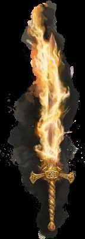

Vasilis, najsłynniejszy spośród pięciu legendarnych mieczy z czasów dawnej epoki cudów, znany jest również pod nazwą Miecz Światła i Cienia.Vasilis wzmacnia emocje swojego posiadacza, intensyfikując takie cechy jak odwaga czy niezłomna determinacja. Jeśli jego właściciel zginie, miecz pozostanie poza zasięgiem wrogów i może zostać przejęty wyłącznie przez sojusznika. Dopóki właściciel żyje, może przekazać miecz innej osobie jedynie z własnej woli.
Miecz ten jest niezwykle potężny, lecz jego moc może wpływać na serce i umysł, często w sposób niekorzystny. Zmiana charakteru właściciela może również odmienić działanie samego miecza. Wielu zdobywało Vasilisa z czystymi intencjami, krocząc ścieżką światła, tylko po to, by ostatecznie utracić go, gdy popadli w mrok.